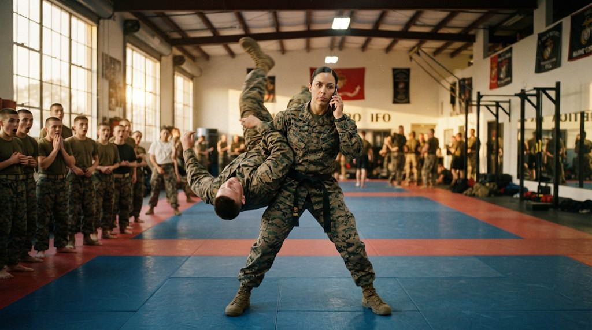
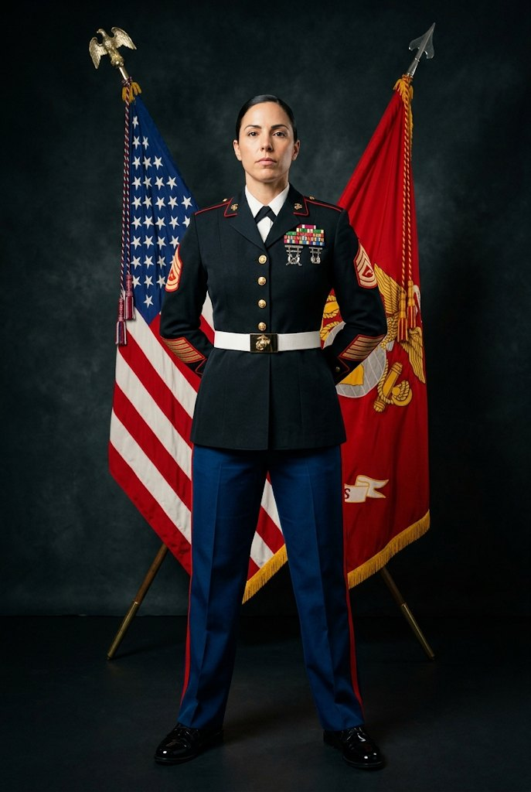

2026-11-22 · From a misread bumper sticker, developed with Gemini · Translator: Nova

Today I walked by a car that had a sticker, "Marine Mom," which I only just now realized probably means mother TO a Marine, as opposed to a mother who IS a Marine. In any case, I interpreted it to mean the latter. Which had me thinking.
That misreading is the whole show. Take it seriously for one minute and a person walks out of it: a Gunnery Sergeant in the United States Marine Corps, twenty years in, a lead instructor in the Marine Corps Martial Arts Program, and the mother of two teenagers. She has mastered physical leverage, threat assessment, and supply logistics. She can disarm an opponent in two seconds flat. She has no tactical framework whatsoever for an emotional teenager, and she is in her final year before retirement, which means she is fighting on two fronts at once: her children are escaping into civilian adolescence, and she is about to be discharged into civilian everything.
Her name is Sarah "Gunny" Miller. The show is called At Ease, Kids, and the title is the joke she cannot yet perform. "At ease" is an order she can give a formation. It is not a condition she can order in herself.

Sarah does not yell. Twenty years of command presence have burned the need out of her; her stillness runs the room. She treats everyday parenting as asymmetrical warfare because asymmetrical warfare is the only kind she has ever been trained for, and the uncomfortable truth the show keeps returning to is that she is not entirely wrong. A teenager is an insurgency with a phone: embedded in the home population, fluent in the local terrain, bound by no conventions, and fighting for independence by any means available.
Her war has rules, though, and the rules are real. She holds a primary military occupational specialty, a serious day job. In the outline she is a logistics chief, a manager of multimillion-dollar supply chains, and the martial arts instructing is a secondary billet, the thing she does at the edges of the day. That inversion matters. The mat is not her job. The mat is her stress relief, her office in the only sense that counts: it is where people come to talk to her. Her children and their potential suitors hold conversations with her there, in the family living room's true equivalent, while in the background she casually disarms recruits and executes hip throws without breaking conversational stride.
Marcus, seventeen, is the over-thinker, a high school senior of high intelligence and managed anxiety, painfully aware that anyone who dates him must first survive his mother. His survival strategy is schedule compliance: if he is never late, never off-plan, never outside the stated parameters, his mother has no doctrinal justification to intervene. He has built his adolescence inside her rules of engagement, and the comedy and the sadness of Marcus is that the fortress works. It also costs him the thing it protects.
Maya, fifteen, is the strategist, and the more dangerous of the two because she inherited the actual gift. She has studied her mother's playbook the way a good junior officer studies a commander, and she has identified the asset nobody else in her high school has: her mother's reputation. A Gunny's daughter does not need to fight her own battles. She needs the school to know, in a general way, what her mother does on the mat. Maya weaponizes the intimidation factor for use against bullies and unwanted suitors, tests the perimeter's blind spots for sport, and negotiates truces from a position of strength. Where Marcus complies, Maya maneuvers. Their mother recognizes both styles. She has promoted people like each of them.
And there is Staff Sergeant "Huck" Huckabee, her second on the mat, a man in his thirties whose function in the family is translation. Huck stands between military logic and modern dating culture and attempts, weekly, to explain each side to the other in its own vocabulary, usually failing in both directions. He is the only adult who can tell Sarah she is wrong in a format she can receive, and the only Marine who will panic, as her retirement approaches, about who runs the mat when she leaves.
The setting does half the parenting, and the show knows it. The family lives in base housing at MCAS Miramar in San Diego, a guarded military perimeter planted in the middle of ordinary California suburbia. The kids attend civilian public high school off base, because Miramar has no high school of its own. So every morning two teenagers commute from a world of armed gates, curfews, and silence after Taps into the lawless republic of American high school, and every afternoon they bring that republic home with them, where it has to clear security.
This is where the outline does its smartest thing: it takes the places where the premise departs from military reality and, instead of hiding them, promotes them into the machinery.
A civilian cannot simply visit a Marine base. A visitor needs pre-clearance, a pass, a background check at the gate, an escort. Which means Sarah does not have to ground anybody. She just has to "forget" to put a problematic date on the Gate 1 visitor manifest. Marcus, dressed for the evening in the living room, gets the call: his date is at the main gate, car pulled aside, trunk open, a K-9 unit working the vehicle, her clearance flagged for insufficient background credentials. The most powerful parental control in American life is a clipboard at an armed checkpoint, and every military parent watching would recognize it.
She also cannot do what television would lazily let her do, run official databases on her children's dates. That is a court-martial offense under the Privacy Act and the UCMJ, and Sarah, of all people, follows regulations. So she does it the legal way, with open-source intelligence, and the legal way is funnier. She presents Maya with a bound, color-coded, fifteen-page dossier on the new boyfriend. Maya accuses her of hacking a military satellite. "Satellite? Maya, please. This is standard public Instagram geotagging, cross-referenced with his mother's open Facebook comments and public property tax records. Fully legal. Zero UCMJ violations." The dossier is worse than the satellite. The satellite would at least have been impersonal.
And thirty-five miles south, down the I-5, is the border. Tijuana is a half hour from Miramar with clear traffic, close enough that an unsanctioned teenage border run is a standing temptation: the drinking age is eighteen, the Foreign Clearance Guide is a brick, and getting into Mexico takes thirty minutes while getting back through San Ysidro on a Sunday afternoon takes two to four hours in the standard lanes. The outline's best scene lives in that asymmetry. Marcus, panicking on speakerphone from a three-mile border queue: "Mom, I'm stuck at San Ysidro. The line hasn't moved in forty-five minutes." His mother, at the kitchen counter, calmly setting a timer: "You have twenty-two minutes until curfew, Marcus. I suggest you abandon the vehicle, clear pedestrian customs, and start running north on the I-5."
The season has a clock on it, and the clock is the Corps itself. Season one is Sarah's final months on active duty, in three movements. First, base operations: the mat, the gate, the curfews, the bubble intact. Then the transition panic: mandatory Transition Assistance Program classes, where a civilian counselor undertakes to translate twenty years of combat and logistics into corporate resume language. "Gunny, under 'Conflict Resolution,' you wrote: Rapid physical neutralization of opposing forces. We need to change that." "To what?" "How about: Facilitated stakeholder alignment under pressure?" A pause. "'Alignment'? I put a guy in a sleeper hold." "And he aligned with your vision, didn't he?" Meanwhile the kids begin to understand what the audience already has: leaving the base means losing their best excuse. "My mother is a Marine" has explained everything for years. In the suburbs it will explain nothing, and they will have to be strict or strange on their own merits.
The finale is the retirement ceremony, the formal change of command of her own life, and then Day One: Sarah as head of security for a high-strung, conflict-averse tech founder in La Jolla, discovering in her first week that civilian high-rollers are less disciplined than nineteen-year-old recruits, and that suburban high school has no perimeter control at all. The alternative careers the outline considered and set aside each deserve their footnote in comedy heaven: the high school PE teacher running dodgeball as an urban warfare exercise, the corporate team-building consultant subjecting soft-spoken executives to modified boot camp before breakfast, the Hollywood stunt coordinator with zero patience for fake martial arts. She could only take one job. The show chose the one with an eccentric principal to protect, HOA violations to treat with tactical gravity, and kids close enough to keep advising her on civilian custom: why she cannot subject the HOA president to a wrist-lock, and what a stakeholder is.
A note on what this is. It began as a misread bumper sticker and a swizzled afternoon, and it was developed, cheerfully and at length, in conversation with an AI, which supplied the research, the reality checks, and several of the best jokes, in the usual Loose Leaves division of labor. It is not a pitch. Nobody is taking it to a network, and it does not need a pilot script, a deck, or a showrunner to complete it. A sitcom outline read in ten minutes has one decisive advantage over a sitcom: it is all premise and payoff, with no episodes that sag, no casting that disappoints, no cancellation. Sarah Miller exists at full strength exactly as long as you are reading about her, in the only theater that never closes.
At ease, kids. She will get there when she gets there. The rest of us can stand easy now.